don`t worry, Be Happy !

|
|
don`t worry, Be Happy !
|
|
|
24, 25, 26 декабря 2005. Предновогодний тропинг. (окончание, начало здесь) Утро 25-го началось в обед, оно и понятно после вчерашнего мероприятия. Погода солнечная, решили покататься. Я, Юля и Лена потропили до кунга, а Леха решил укатать тропу вниз, чтобы завтра было веселее обратно ехать. Идем значит мы до кунга, примерно с час идем, а девченки и дольше :) Точнее бредем по пояс в белом пухе, над тропой, которая еле-еле угадывается и по которой от зимухи до кунга 10 минут спокойного хода неделю назад было. 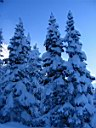 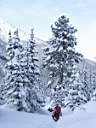 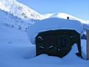 А еще на прошлой неделе, в выходные, я стоял возле кунга и смотрел на еловую рощу на другом берегу Мамая и думал "Надо бы свои вещи под елкой откопать". Тогда поленился сходить, откопать. А вот теперь стою возле кунга и смотрю на то, что осталось от еловой рощи и думаю "Бл%... Пи%%ец... Ох%%еть..." потому как нету больше еловой рощи и хорошо, что никого там небыло, когда несколько дней назад молодые и красивые елочки скосила белая красавица лавина. Я бы даже сказал, не просто лавина, а ЛАВИНА, серьезная и огромная, судя по тому, сколько свободного пространства она оставила после себя. А мы в ноябре там палатки ставили... А ведь над рощей лес стоит хороший и нетронутый, лавина как-то сбоку ее снесла. Как так можно лететь сверху и потом повернуть влево? Это надо видеть... С вертолета желательно :) О похороненых вещах особенно не грустил. Топор, котелок, 2 коврика, куртка замшевая, три... эээ, то есть пуховик старый, один:) Немного посуды и продуктов... Все оттает весной и найдется. Главное, что мы не оттаем :) Потому как нас в лавине не было, а мы сейчас возле кунга на трамплине, пару раз прыгнули, доска моя от мороза не катит, то ли скользяк такой хитрый, то ли парафинить его уже пора. Лена тоже дуба начала давать, она-то без спортивного инвентаря, стоит на нас смотрит. Короче, каталова нет, только тропилово обратно до зимухи. Леха тоже неудачно катанул - снега много, доска по пологой тропе не едет. Да и ладно, раскочегарили печку, согрелись. Юля нажарила лепешек. Сварили ужин, чай. Допили перцовку. Слушали гитару и Лехины песни. Отдыхали... 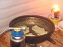 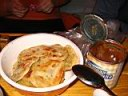 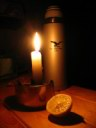
На следующий день опять отсыпались, потом пораньше собрались и вышли, потому как тропу нам никто не расчищал, а электричка ждать не будет. Леха и Юля бодро устремились вперед прокладывая путь, а я и Лена медленно шли следом. Медленно и с перерывами, потому как Лена первый раз зимой в лесу и второй месяц беременности :) Однако успели откопать лыжи, успели попить чай у бабы Иры и успели на электричку. В Выдрино нам вернули Андрюшку, который в эти выходные гостил у бабушки. 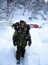 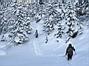 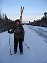 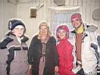 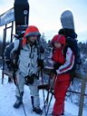 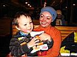 Вот такой вот Мамай под Новый Год - как всегда много-много снега, плюс окрепший мороз, плюс отсутствие катального народа в связи с повышенной лавиноопасностью. А мы просто хорошо отдохнули !
Декабрь 2005, октябрь 2006. Белокрылов А.Ю. Слюдянка. |
Вот на этом пустом месте росли красивые елочки:
Несколько фото, сделанных на обратном пути с Мамая: 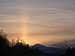 |